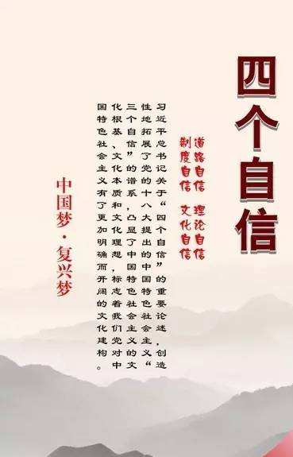
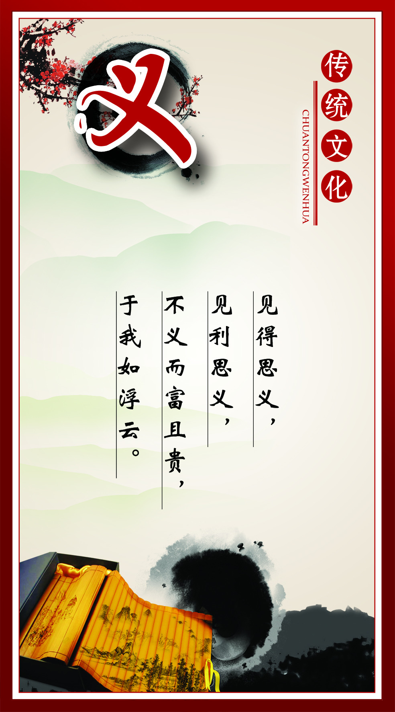

China Net ASEAN March 29th News On March 28th, 2018. Ceremonial East 14th China-ASEAN Etiquette Contest series was launched in Nanning. This marks that Guangxi is more open, confident, and ceremonial, making ceremonial cultural exchanges a pioneer in the ceremonial culture of “building a 21st century maritime silk road and building a China-ASEAN innovation community” and actively integrating into the international arena.
Cultural confidence
Culture is the soul of a country and a nation. Culture rejuvenates the country and the culture is strong and the nation is strong. Without a high degree of cultural self-confidence and no cultural prosperity, there would be no great rejuvenation of the Chinese nation.
Cultural rejuvenation
Adhere to cultural self-confidence, stand on the tradition, highlight the characteristics of ethnic regions, deepen the local cultural resources, promote the core values of socialism, and transmit positive energy, in order to embark on a new path of cultural prosperity and development with local characteristics.
see more
In the report of the 19th National Congress of the Communist Party of China, General Secretary Xi Jinping pointed out the origin of socialist culture with Chinese characteristics and clarified the important role and basic position of cultural self-confidence in the great rejuvenation process of the Chinese nation. Strengthening cultural self-confidence is not an empty slogan. The key lies in clarifying the unique value of Chinese excellent traditional culture, explaining the guiding value of Marxist theory, and exerting the value-leading role of socialist culture with Chinese characteristics.
The socialist culture with Chinese characteristics originates from the Chinese excellent traditional culture bred by the Chinese nation over 5,000 years of civilization history. It is rooted in the revolutionary culture and advanced socialist culture created by the party leading the people in revolution, construction and reform. The great practice of socialism with Chinese characteristics. To develop socialist culture with Chinese characteristics is to use Marxism as a guide, adhere to the Chinese cultural standpoint, base on the contemporary Chinese reality, and combine the conditions of the current era to develop a socialist culture of the masses facing the modern, world-oriented, future-oriented, national science. Promote the coordinated development of socialist spiritual civilization and material civilization. We must persist in serving the people, serving the socialism, persisting in the blossoms of the flowers, contending with the 100 schools, persisting in creative transformation and innovative development, and constantly creating new glory in Chinese culture.
(1) Firmly grasp the leadership of ideological work. Ideology determines the direction and development path of culture. We must promote the popularization of Marxism in China and build a socialist ideology with strong cohesiveness and leadership, so that all people can be united in their ideals, beliefs, values, and moral values. It is necessary to strengthen the armed forces of the theory and promote the socialist thinking with Chinese characteristics in the new era. Deepen the research and construction of Marxist theory, accelerate the construction of a philosophy and social science with Chinese characteristics, and strengthen the construction of a new type of think tank with Chinese characteristics. We attach great importance to the construction and innovation of communication means, and improve the communication, guidance, influence, and credibility of news media. Strengthen the construction of Internet content, establish a comprehensive network management system, and create a clear network space. We will implement the responsibility system for ideological work, strengthen the construction and management of positions, and pay attention to distinguishing between political principles, ideological and cognitive issues, and academic viewpoints. The flag clearly opposes and resists various misconceptions.
(2) Cultivate and practice the core values of socialism. The core values of socialism are the concentrated expression of the contemporary Chinese spirit and condense the common value pursuit of all the people. We must focus on cultivating new people in the era of national rejuvenation, strengthen education guidance, practice development, and institutional guarantees, and give play to the leading role of socialist core values in national education, spiritual civilization creation, and spiritual and cultural product creation and production. The core values of the society are integrated into all aspects of social development and transformed into people's emotional identity and behavioral habits. Adhere to the action of the whole people, take the lead in cadres, start from the family, and start from the doll. In-depth exploration of the ideological concepts, humanistic spirit, and moral norms contained in the excellent traditional Chinese culture, combined with the requirements of the times to inherit and innovate, let Chinese culture show permanent charm and style.
(3) Strengthening ideological and moral construction. The people have faith, the state has power, and the nation has hope. It is necessary to improve the people's ideological consciousness, moral standards, and civilized qualities, and to improve the level of civilization in the whole society. Extensively carry out the education of ideals and beliefs, deepen the propaganda and education of socialism with Chinese characteristics and Chinese dreams, carry forward the national spirit and the spirit of the times, strengthen patriotism, collectivism, socialist education, and guide people to establish a correct view of history, national outlook, national outlook, culture View. In-depth implementation of civic moral construction projects, promote social morality, professional ethics, family virtues, personal morality, encourage people to be good, filial piety, loyalty to the motherland, loyal to the people. Strengthen and improve ideological and political work, and deepen the creation of mass spiritual civilization. Carry forward the scientific spirit, popularize scientific knowledge, carry out the movement of changing customs and customs, carry forward the new trend of the times, and resist the erosion of decay and backward culture. Promote the integrity construction and institutionalization of volunteer service, and strengthen the sense of social responsibility, rule awareness, and dedication.
(4) Prospering and developing socialist literature and art. Socialist literature and art is the people's literature and art. We must adhere to the people-centered creative orientation, and carry out literary and artistic creations that are worthy of the times in deeper life and rooted in the people. We must prosper literary and artistic creation, adhere to the profound thoughts, exquisite art, and finely crafted, strengthen the creation of realistic themes, and constantly introduce the masterpieces of the Yangge Party, the Songs of the Motherland, the Acura People, and the Acura Hero. Promote academic democracy, artistic democracy, enhance the originality of literature and art, and promote the innovation of literature and art. Advocate to talk about taste, speak style, stress responsibility, resist vulgarity, vulgarity, kitsch. Strengthen the construction of the literary and artistic team, create a large number of masters of German and art double singers, and cultivate a large number of high-level creative talents.
(5) Promoting the development of cultural undertakings and cultural industries. To meet the new expectations of the people to live a better life, we must provide rich spiritual food. It is necessary to deepen the reform of the cultural system, improve the cultural management system, and accelerate the establishment of an institutional mechanism that puts social benefits first, social benefits, and economic benefits. Improve the public cultural service system, implement the cultural benefit project in depth, and enrich the mass cultural activities. Strengthen the protection and utilization of cultural relics and the inheritance of cultural heritage protection. Improve the modern cultural industry system and market system, innovate production and operation mechanisms, improve cultural and economic policies, and foster new cultural formats. Extensively carry out national fitness activities, accelerate the construction of a strong sports country, and organize the Beijing Winter Olympics and Winter Paralympics. Strengthening cultural exchanges between China and foreign countries, with me as the mainstay and eclecticism. Promote the construction of international communication capabilities, tell the Chinese story, show the true, three-dimensional, comprehensive China, and improve the national cultural soft power.
Cultural rejuvenation
Cultural power

Four confidence
Cultural self-confidence is "more basic, broader, deeper self-confidence"
Culture is the soul of a country and a nation.
see more

Fine tradition
"With the rules of the ancients, open your own face"
Chinese traditional ideology and culture reflect the world view, outlook on life, values, aesthetics, etc.
see moreRevolutionary spirit
"The light of ideals does not die, the light of faith does not die."
During the revolutionary era, the Chinese Communist Party and the Chinese people wrote a glorious history with blood and sweat.
see moreCultural soul
"The cultural movements are in line with the national movement, and the context is connected with the national pulse."
Thoughts and values are the soul of culture.
see more-

-

Recently, the 2017 “Ten Cultural Events” selection in Zhangzhou City was announced. The Zhangzhou Daily newspaper planned to launch a series of large-scale historical facts series “Chuzhou City Romance: Cangzhou Jiancheng 2200 History” and the film “Days of Heaven” won many awards at home and abroad. Selected.
The selection was launched in March this year. The city's government agencies, people's organizations and counties (cities, districts) recommended 52 incidents. After preliminary review and selection, the organizers identified 20 candidate events and produced network special columns for display and voting. In the case of comprehensive public voting, the expert review team will review the shortlisted candidates and finalize the “Top Ten Cultural Events” in Zhangzhou City in 2017. -
"Without a high degree of cultural self-confidence and no cultural prosperity, there will be no great rejuvenation of the Chinese nation." In the report of the 19th National Congress of the Communist Party of China, Comrade Xi Jinping issued a "firm cultural confidence and promote the prosperity of socialist culture" to the whole party and the whole nation. Great call.Some moments will surely go down in history. "Good news spread to Zhuang Township, the song is full of love like Jiang..." In Zhuang Township, which is more than 2,000 kilometers away, Liao Yin, who is known as the "Song of the Song" in Xiangzhou County, created a folk song, expressing The joy of holding the victory of the 19th National Congress.How to serve the people and serve socialism with a high degree of cultural self-confidence in a new era, and create a new glory of Chinese culture? In the past few days, the representatives of Guangxi who attended the 19th National Congress in Beijing have also gathered consensus in exchanges and discussions, and gathered strength in thinking and outlook.
-

Since the 18th National Congress of the Communist Party of China, General Secretary Xi Jinping has mentioned cultural self-confidence on many occasions. Cultural self-confidence is, in the final analysis, a confidence in the Chinese traditional culture, the spiritual home of the Chinese nation. The Chinese culture has a long history and accumulates the deepest spiritual pursuit of the Chinese nation. It represents the unique spiritual identity of the Chinese nation and provides a rich nourishment for the Chinese nation to survive and develop. Don't forget this to open up the future, and be good at inheriting to be better innovating. China has been a multi-ethnic country since ancient times. Although there are contradictions and conflicts in various ethnic groups in history, it is the mainstream of ethnic relations to live in harmony, friendly exchanges and mutual learning, and jointly create a splendid Chinese civilization. With the difficulties of China’s peaceful rise and the development of the West after the reform and opening up, many Western countries now explore the Chinese traditional culture in terms of benevolence, nationalism, integrity, respect for justice, harmony, and equal thinking. The value of the times, the emergence of "Chinese culture fever", "Confucius fever" and "Chinese fever", is very worthy of national consideration. We should strengthen our cultural self-confidence and make new achievements in helping Guangxi's cultural prosperity and development.
© Copyright 2018 by Guangxi University La Cheerleading. All Rights Reserved.